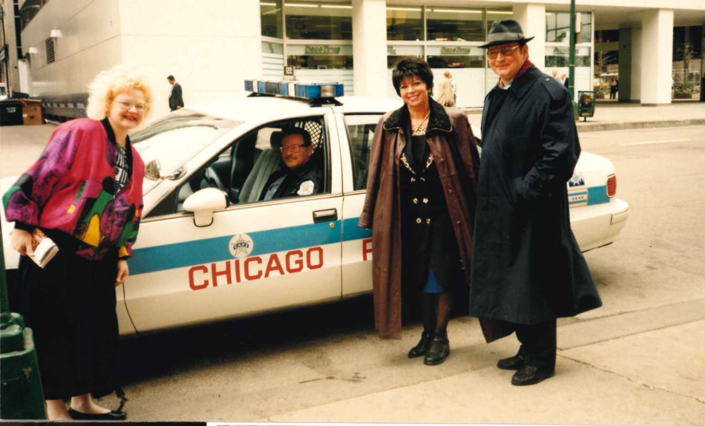

Bibliografia księdza kanonika dr Józefa Witkowskiego
Diecezja Toruńska 2014. Struktura i duchowieństwo, Toruń 2015.
Kalinowski Jerzy Karol ks., Podziały terytorialne diecezji toruńskiej, w: Jubileusz diecezji toruńskiej. Spojrzenie w przeszłość i w przyszłość, red. Waldemar Rozynkowski, Paweł Borowski, Toruń 2017
Kalinowski Jerzy Karol ks., Kapituły i kanonicy diecezji toruńskiej, w: Jubileusz diecezji toruńskiej. Spojrzenie w przeszłość i w przyszłość, red. Waldemar Rozynkowski, Paweł Borowski, Toruń 2017.
Kalinowski Jerzy Karol ks., Śp. ks. kanonik-jubilat Józef Witkowski, Toruńskie Wiadomości Kościelne, R. 32, 2023, nr 1(124).
Ławniczak Adam, Bractwo Świętego Józefa Opiekuna Rodzin przy kościele p.w. Chrystusa Króla w Toruniu, Kaliskie Studia Teologiczne, t. 8: 2009/2010.
Ławniczak Adam, Jubileusz Bractwa św. Józefa Opiekuna Rodzin (1), Niedziela, Głos z Torunia, nr 11: 2010.
Maniakowska Helena, Wizytacja kanoniczna, Niedziela, Głos z Torunia, nr 43: 2010.
Rumińska Jolanta, 80. rocznica Franciszkańskiego Zakonu Świeckich, Niedziela, Głos z Torunia, nr 43: 2011.
Rozynkowski Waldemar, Ksiądz kanonik dr Józef Witkowski (1939-2023), w: Barbara Witkowska, tomik w trakcie wydawania, Toruń 2025.
Witkowski Józef ks., Jubileuszowe rekolekcje dla nauczycieli i katechetów, Niedziela, Głos z Torunia, nr 28: 2000.
Witkowski Józef ks., Kościół Chrystusa Króla na Mokrem w Toruniu, Niedziela, Głos z Torunia, nr 30: 2006.
Strużanowski Tomasz, 10. rok pracy Bractwa św. Józefa, Niedziela, Głos z Torunia, nr 41: 2009.
Wojnowski Mariusz ks., Katechizacja w diecezji toruńskiej w latach 1992-2012, Toruń 2017.
dk. prof. Waldemar Rozynkowski
